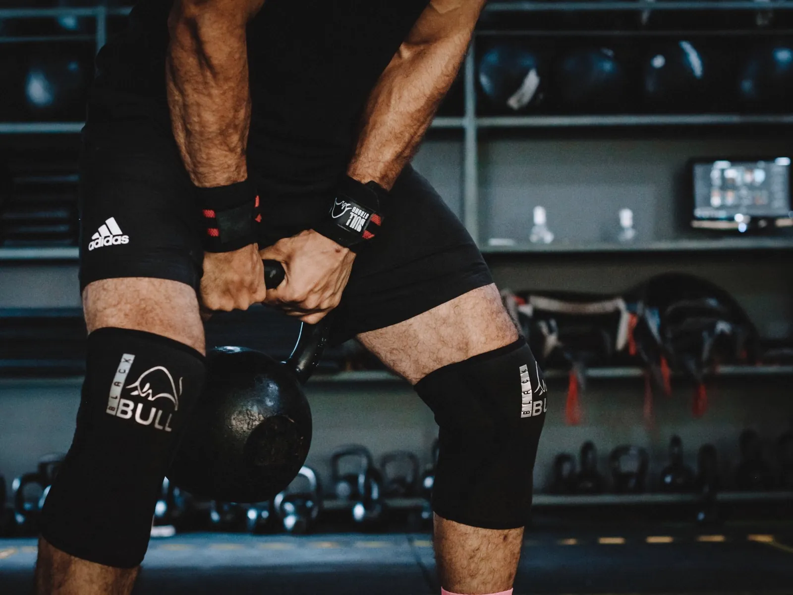
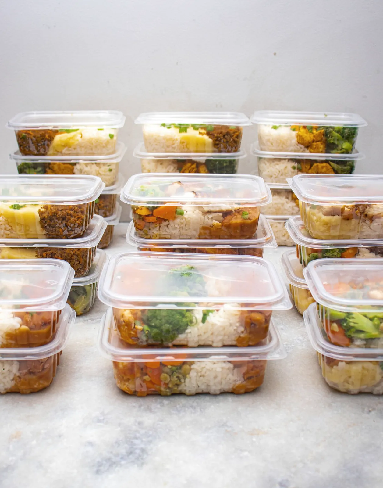
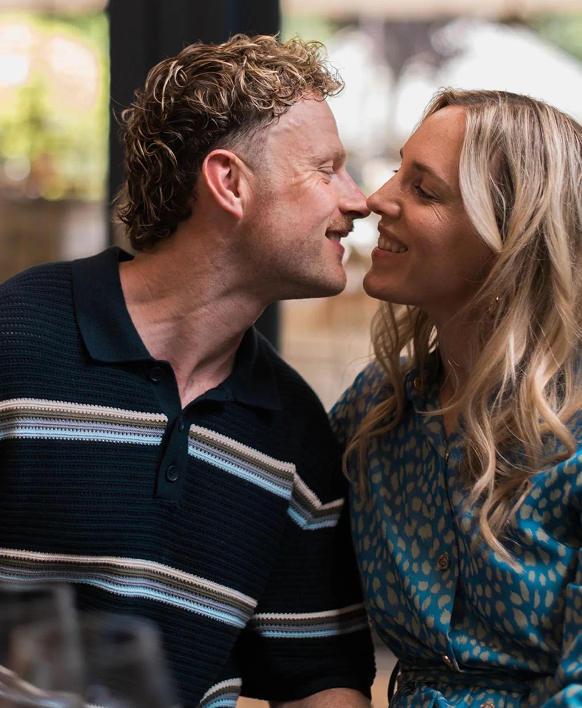

3x per week kracht
Drie korte, effectieve trainingen van 45 minuten waarin ge sterker probeert te worden. Meer moet niet.
Ik help gedreven papa's in 24 weken naar de beste shape van hun leven. Met training, voeding en mindset die passen in een leven met kinderen, werk en te weinig slaap.
STERKWERK

"Iedereen heeft dezelfde 24 uur in een dag."Maar 24 uur met of zonder kinderen is toch een wereld van verschil.Tim, op Instagram
Werken aan uw eigen doelen is als ouder niet meer zo vanzelfsprekend. Uw tijd, uw energie en uw prioriteiten veranderen. Dat is geen excuus, dat is gewoon de realiteit.
Daarom draait alles bij mij om slim en efficiënt omgaan met de tijd die ge hebt. Geen dagelijkse uren in de fitness, geen ingewikkelde schema's. Wel een goed plan, de juiste verwachtingen en iemand die meekijkt.
Klinkt allemaal simpel, maar daarom is het nog niet makkelijk. Daarvoor ben ik er: om het samen met u vol te houden tot het vanzelf gaat.
Drie korte, effectieve trainingen van 45 minuten waarin ge sterker probeert te worden. Meer moet niet.
Vaker dezelfde maaltijden, minder nadenken. Hoe makkelijker uw voeding, hoe beter ge ze volhoudt.
De trap nemen, wandelen tijdens de pauze, actief spelen met de kinderen. Al die kleine momenten tellen op.
Eerst moet ge uzelf nog verplichten. Hou lang genoeg vol en sporten wordt een deel van wie ge zijt.


In het middelbaar voelde ik mij echt een kneus. Ik heb lang gedacht dat ik nergens goed in was. Dat gevoel drijft mij vandaag nog altijd om een betere coach te worden.
Alles wat ik bijleer, vertaal ik naar iets wat mijn klanten deze week al kunnen gebruiken. Hier krijgt ge geen perfect leven te zien, wel eerlijke verhalen en praktische tips.

 content draaien
content draaien★★★★★"Tim heeft me op 3 maanden tijd top begeleid qua voeding, krachttraining en leren lopen vanaf 0. Na 2 maanden tijd heb ik mijn eerste kwart marathon gelopen. Met trots kan ik dan ook zeggen dat ik meer dan 10% vetpercentage verloren ben. Tim is een coach die goed kan luisteren, motiveren en uitleggen."
★★★★★"Mijn kijk op sporten is door Tim echt veranderd. Waar ik het vroeger soms zag als iets wat 'moest', zie ik het nu veel meer als een uitlaatklep. Hij legt dingen duidelijk uit en zorgt er voor dat je zelf begrijpt waarom je iets doet, in plaats van gewoon een schema te volgen."
★★★★★"Ik ben nu al een paar maanden uit de coaching en nog steeds blijf ik mooi op gewicht, ik blijf in beweging en heb een gezonde relatie met voeding gecreëerd. Tim heeft mijn leven veranderd, en zoals hij het zelf altijd zou zeggen: sterk voor altijd!"
Twijfelt ge nog of hebt ge een vraag? Stuur mij gewoon een berichtje. We bekijken samen waar ge nu staat en wat haalbaar is in uw week.
Ik maakte deze demo voor jullie om te tonen wat er kan. Na een kort gesprek maak ik er iets veel persoonlijkers van, helemaal naar jullie wens.
Vrijblijvend. Ik kom langs of we bellen.
Op maat, op jullie eigen domein.
Geen voorschot. Jullie betalen pas als alles klaar is.
Hosting, domeinnaam en kleine wijzigingen, zoals nieuwe openingsuren.
Omdat een voorbeeld meer zegt dan een mail. Zo zien jullie meteen wat er kan, en het kost jullie niets.
Nee. Het gesprek is vrijblijvend. Vinden jullie het niks, dan is het daarmee gedaan.
Na ons gesprek staat jullie site binnen 10 tot 14 dagen online.
Zeker. Jullie domeinnaam kan gewoon blijven, de nieuwe site komt in de plaats van de oude.
Nee, dat doe ik op basis van ons gesprek. Eigen foto's zijn mooi meegenomen, maar niet nodig om te starten.